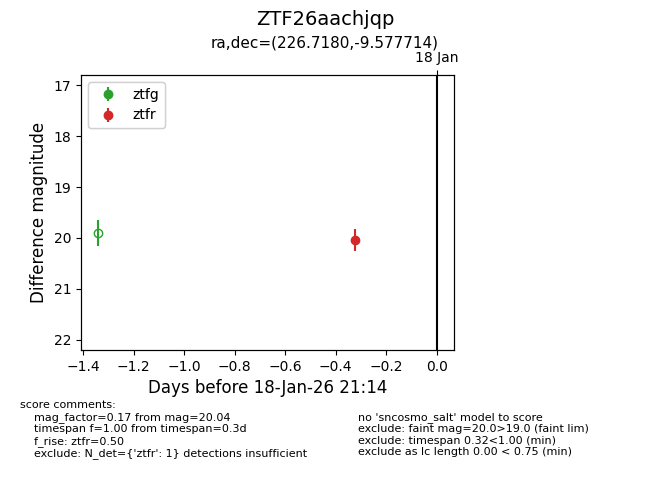
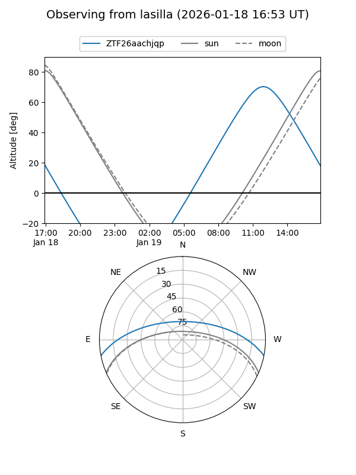
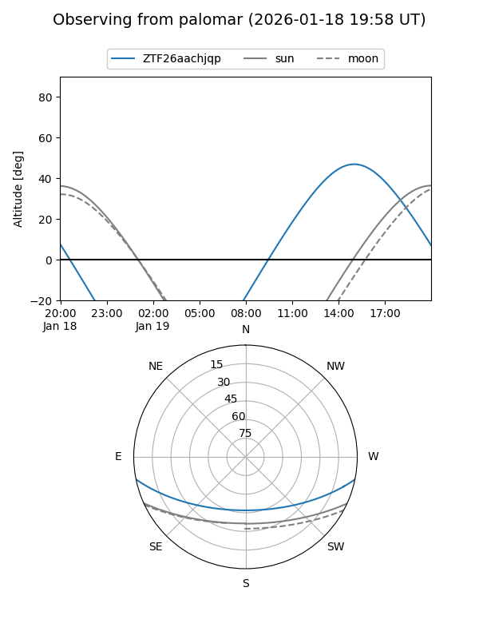

ZTF26aachjqp
Target ZTF26aachjqp at 2026-01-18 21:16
Aliases and brokers:
FINK: link
Lasair: link
ALeRCE: link
alt names
ZTF26aachjqp (ztf,fink_ztf)
Coordinates:
equatorial (ra, dec) = 226.7180,-9.57771
equatorial (HMS+DMS) = 15:06:52.33,-09:34:39.77
galactic (l, b) = (349.4255,+40.75978)
Flags:
Photometry:
last ztfr=20.04
1 ztfr detections
Lightcurve

Visibility


Additional plots